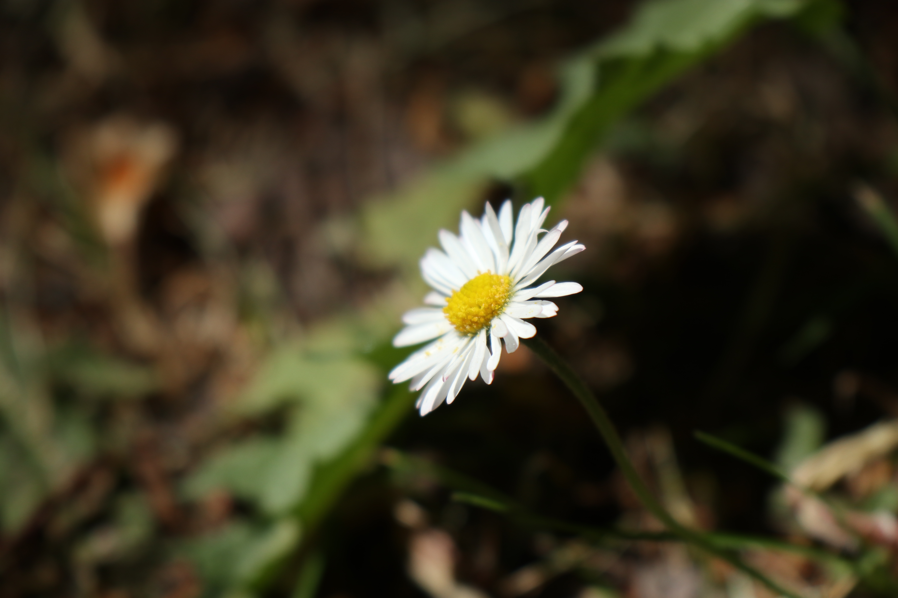
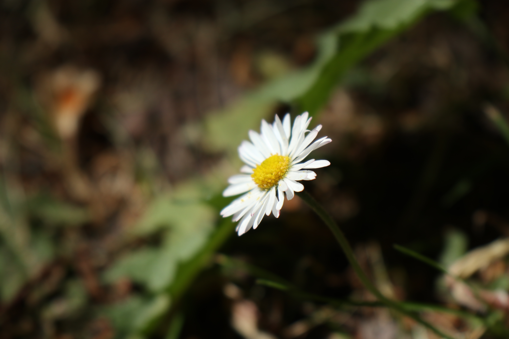
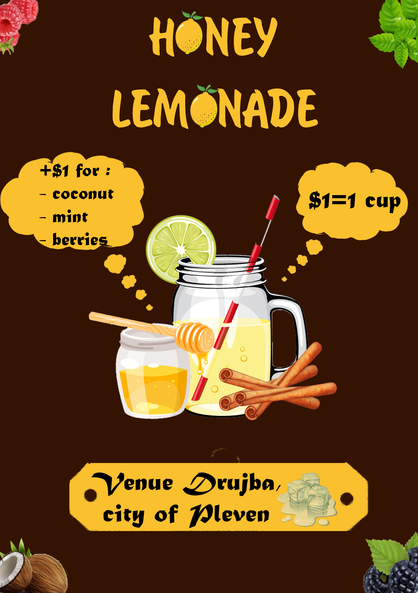
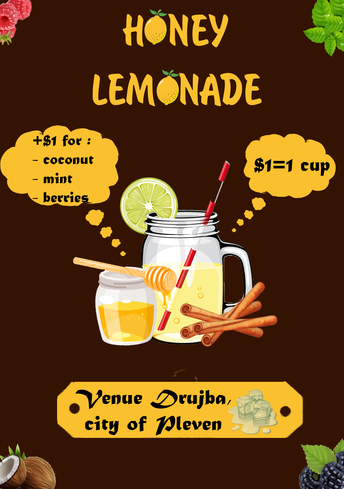

Photography Projects


Macrophotography of Jewelry
Description Project
I had the opportunity to work with fellow students from NHL Stenden for a jewelry shop in Friesland. The client was a goldsmith who owned a shop.
She wanted to have more online presence and more professionally taken photos, so the team of business students made her a plan and I was asked to take photos of her work.
 



 
